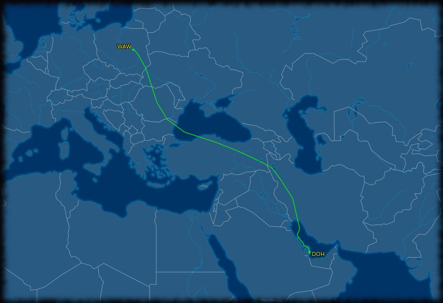
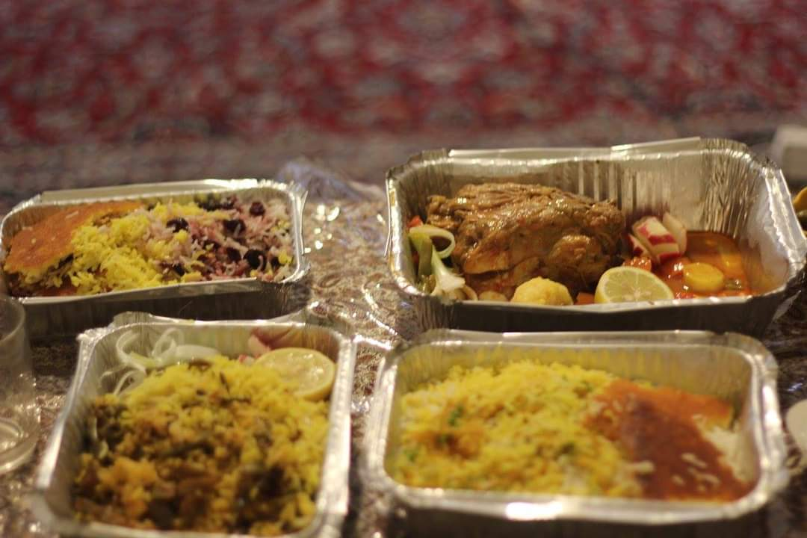
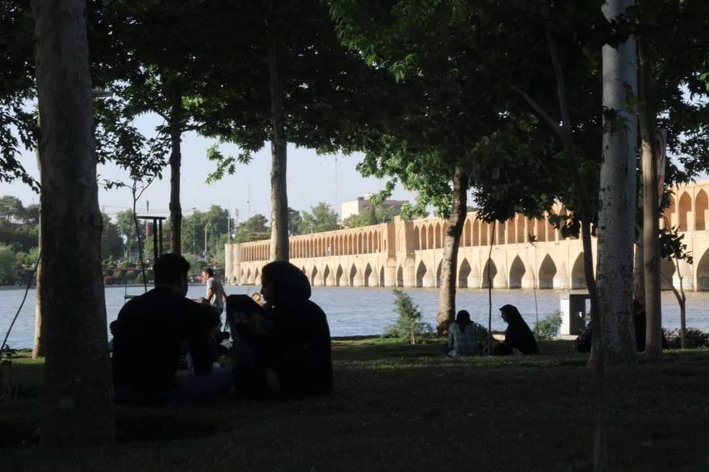
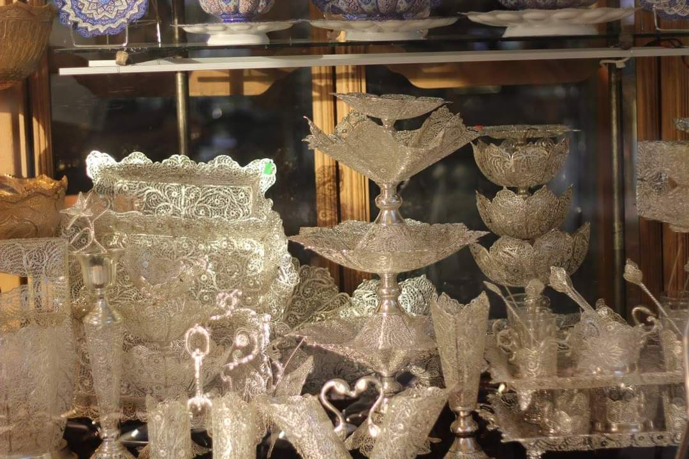

We are travelling around the islands of Polynesia.
Politics and Poetry in Iran
- Tehran
- Election Fever
- Rosewater Dreams
- Art and Magic in Esfahan
- Majestic Persepolis
- Flowers and Poetry in Shiraz
- Practical Information
My first flight was from Warsaw to Doha. It had to zig-zag to avoid active war zones in Eastern Ukraine and Iraq, because such times we live in. You sometimes forget how close these things are, but going to Iran there is no doubt - the political context of out times is present every hour of every day.

The Doha airport was strangely empty. I'd expected it to be dripping in luxury - it wasn't. Waiting to board the flight to Tehran, I covered my hair. Very soon, I'd get tired of heving to do that but at that moment it felt exotic. If anything - it made me stand out. Every single woman on that plane waited until the last possible moment before stepping out of the plane to cover her head. This every day quiet resistance of Persian women is the most constant thing about that country.
After landing, all non-citizens waited to be issued visas. With most of the world's passports, you can get a visa after arrival, provided you have medical insurance and a local address to give. You can also purchase health insurance right there, at a slighlty higher price. Pretty standard. They collected our passports and documents and we waited. Many of the tourists waiting there were French. When a border guard came out with a batch of passports to hand back, one of the French tourists tried to be helpful (I suppose) in a typical condescending, boomer, completely unhelpful way and took the passports and started reading out names. He butchered all Chinese names so completely, the people the passports belonged to didn't recognise them. The border guard took the passports back and read the names out flawlessly. I probably felt more embarassed than the French boomer.
My friends waited for me at the arrivals. For obvious reasons, I won't mention their names or show their faces. But they are two of the most wonderful people in the world in every way and none of this would be possible without them.
And so the adventure began. The first thing you notice about Tehran, a massive city built on an incline with mountains shielding it from the north, is that there are many, many national flags. In that way it's very similar to arriving in the USA.
I got really fed up with having to cover my head very quickly. I have always been very sensitive to heat and this was just really awful for me. What was absolutely amazing however, was the food. I really have no words for how different and delicious Presian food is. If you can, go to a good Persian restaurant and ask if they have Sour Cherry Rice. There are also incredible meats, the rice is cooked in some magical way that makes crispy rice cakes at the bottom of the saucepan (but somehow doesn't burn it) and there is often saffron or rosewater in the dishes that both make it very much unlike any other cuisine on Earth.

On every subway train, there are two cars that are restricted for women only. Other cars are open to everyone but most women opt for the restricted ones. So did we. These rides were fascinating - almost every time, there were vendors selling cosmetics, underwear of hair accessories making their way through the crowd.
I'm a total nerd for socialist history, so I really wanted to see Mossadegh's house. Before going over, I looked up the location. But there was no plaque, no museum, nothing. Only one of the people we talked to around there even remembered it used to be there. I suppose the current regime isn't interested in keeping that part of history. It's pretty interesting - after all, deposing Mossadegh is America's original sin in Iran. But perhaps the threat of a secular people's government is more important than fearmongering about the US?
At one point, we went to the area where Tehran University is. The street was lined with book vendors selling forbidden books - Chomsky, atheism, all kinds of philosophy. The books were laid out on tarps. If they got word that morality police is coming, they'd wrap up the tarp with all the books inside and disapear in seconds. In a hip cafe we went to (and had an incredible drink with - that's right - mustard-ish seeds called khakshir) all of the girls had their scarves down. If police came by, they were ready to pull them up.
Tehran, all in all, is a fascinating city with parks, art galleries, music clubs and great restaurants. It's very easy to get to know the people you meet, because they're open and most will speak some foreign languages. Persian has a lot of words in common with French (merci!) and I even used my broken Russian to talk to a driver at some point. And I'm sure you've heard this before but the Persians are one of the most educated people on Earth. That's very clear in Tehran. Much of the society lives in silent resistance to the strange regime they got stuck with and does their best to thrive in spite of it.
ELECTION FEVERIt was a time of the 2017 presidential election. We hadn't realised, when we planned the trip, that it would coincide. In fact, when it seemed for a moment that Ahmadinejad might spite Khamenei and run again we were ready to resechedule the trip altogether. But in the end, we decided things are unlikely to get heated. President Rouhani was up for reelection - and he was the "moderate" candidate, a compromise supported by reformists (even though some of them were still imprisoned). His main oponent was a hardliner - Ebrahim Raïssi, responsible, among other things, for 1988 executions of political prisoners in the war with Iraq. Rouhani's first term was a welcome relief after Ahmadinejad. The morality police let up somewhat, young women were getting away with wearing headbands instead if a full head covering, and a drying up of a major lake had been reversed. A deal with USA saw the world lift most of its trade sanctions from Iran, and even though Trump was likely to go back on it, the rest of te world wasn't. Rouhani was very much the Obama equvalent back then - nice, progressive optics and good management of the day-to-day, with the bulk of the authhoritarian machine firmly in place.
8 years before that, when Ahmadinejad was running for his second term, the situation was far more explosive. The main opponent was a true reformist - former prime minister Mir-Hossein Mousavi. Many believed in his victory, and when official results were announced - 63% to 34% - people took to the streets to denounce the elction as fraud. And they didn't let up. After days of protest, violent crackdown started. Many Iranians know someone who was killed or arrested at the time. I met a young man whose father was killed. As I'm writing this in 2020, Moussavi remains under house arrest.
Since 2009, the color of reformists in Iran is green. And since no reformist candidate was allowed to run in subsequent presidential elections, reformists threw there support behind the moderate, Rouhani. And so, in the week before the election, we went to an election rally in a hip district of Tehran. The room was decorated in purple (the color of the moderates) and green. But the crowd displayed mostly green. It was young and rowdy and it chanted. At one point, the chant demended Moussavi be let out of house arrest.
You know, for a country with no freedom of speech, everyone in Iran tells you readily who they are voting for. In the days before the election, everywhere we walked in Tehran groups of people where having shouting debates about their candidates. Most in Tehran favored Rohani, but we came across a few Reisi supporters, mostly young men. One of the strangest things about the election was that musician Tataloo - bit of a Pitbull equivalent - endoresed the hardline conservative Reisi... Which, you know, is weird. Cause Tataloo certainly embraces the western pop star esthetics somewhat. Including having babes around. We'll come cack to that.
The election included some downticket races, like for city council. Here there were both women candidates and even some reformists. Posters around the city had rown of photos of cadidates, and all women had to have identical, black, full head coverings. But you could spot the reformists by green cravattes.
As in many countries around the world, pre-election silence starts two days before the vote. The last day of campaigning was a Wednesday. And I will never forget Tehran that evening. It was wild. During the day, processions in favor of either candidate went down the streets, singing songs and chanting slogans. Cars and motorcycles drove slowly waving flags and colours of their chosen candidate. Police and army lurked around the streets. At one point, it looked as if two opposing processions might meet. The street was suddenly full of police and one officer motioned at us to get away. As far as I could tell the crowds were separated an no fighting ensued.
By the evening, Reisi supporters disappeared. The streets were full of young people holding signs either in support of Rouhani, or indicating "not going back." Some were singing anti-revolution songs that would land you in prison on any normal day. The cars were waving purple flags.
[INSERT VIDEO FOOTAGE]
I'm writing this in 2020. Click here for a quick post sciptum on how the political situation has changed.
ROSEWATER DREAMSWe took a day trip to a rosewater factory. It was a minibus, and I was the only person who didn't speak Persian. Most of the passengers were middle-aged women. Architects, doctors, professors... every single one a high achiever. It was pretty incredible. It was probably the hardest day for me in terms of heat. But the things we saw were beautiful. Fields of roses, vats of rosewater being distilled. Old buildings, waterfalls, parks. But the most fascinating part of it was our fellow passengers.
When we were on our way back to Tehran, it was already dark. At some point, one of the ladies handed the driver some music - some kind of Persian upbeat tune. Others drew the curtains on the windows so that no one can see in and... started dancing in the passage between seats. You know, dancing is illegal. This little bit of subversion felt even more significant, than drinking alcohol, listening to metal, or seeing all the forbidden books.
ART AND MAGIC IN ESFAHAN

Temples
Markets


MAJESTIC PERSEPOLIS
FLOWERS AND POETRY IN SHIRAZ
ENTRYIf you're considering going to Iran, I'm going to assume the Covid-19 pandemic is over. If it's not, please reconsider - the country was very heavily hit and official numbers may not be reliable. If the visa requirements are back to the state before Covid, then most people in the world are eligible for a visa on arrival. Notable exceptions are US and Canadian passport holders who will need to arrange a visa in advance, and Israeli passport holders who will unfortunately not be able to enter. Check your country's status here: https://en.wikipedia.org/wiki/Visa_policy_of_Iran
INTERNETAs I write this in 2020, Iran is still connected to the global internet network, but access is heavily censored. Some fear it may disconnect in the future, in favor of a national intranet, much like North Korea. There have been trial runs during last year's protests. As of now, the best way to circumvent the censorship on mobile devices appears to be Psiphon. (Best to download in advance.) On PCs, Tor remains a good choice.
MONEY Something one needs to prepare for when travelling in Iran, is that the ATMs are not connected to the global bank infrastructure. So as a foreigner, you need to bring cash. You can exchange foreign cash in designated spots and with some people hanging out outside of them. But honestly, I don't recommend trying to do any of this without someone who knows their way around helping you out. You can learn the Persian numbers quickly enough, but if you're a foreigner the prices will mysteriously go up immediately, and it's pretty easy to feel lost and confused. But if you do have local friends, travelling around Iran is actually very affordable.
_______________________________________It is now 2020. The world is in much more turmoil than in 2017, and in January this year, the USA assasinated a hardliner Iranian general. Shortly afterwards, Iran shot down a passenger plane, seemingly by accident, and the Minister of Foreign Affairs Mohammad Javad Zarif resigned as a result (but was soon reinstated). It is perhaps the shame caused by this error that made sure Iran did not retaliate and the situation did not escalate into a war. A few months later, both countries plunged deep into the Coronavirus epidemic. In 2019, many Iranians who had high hopes for Rouhani to gradually move the country in a less authoritarian direction faced a rude awakening. The government announced a tripling of the price of gas, which resulted in a wave of protests. These protests were immediately met with a violent crackdown, much sooner than those in 2009. The country got temporarily disconnected from the internet, and it served as a trial run for an intranet running some of the government's services, separated from the global network. Many believe Iran may be getting ready to disconnect permanently, much like North Korea.